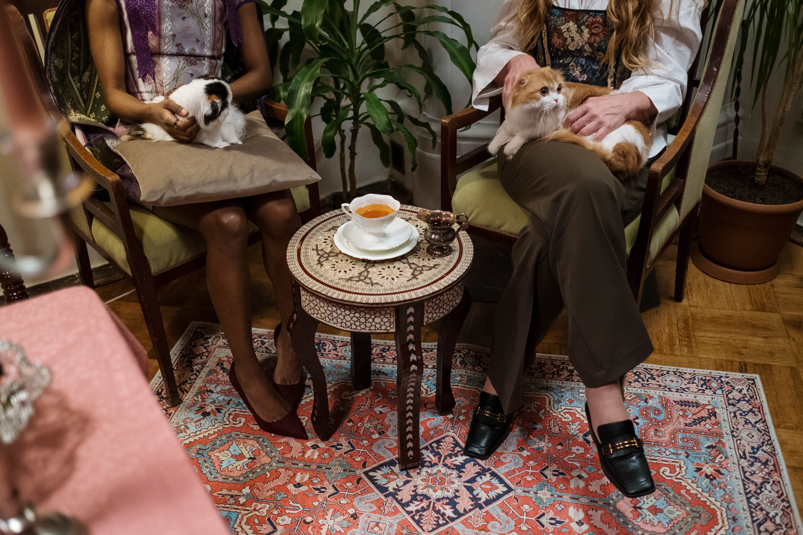
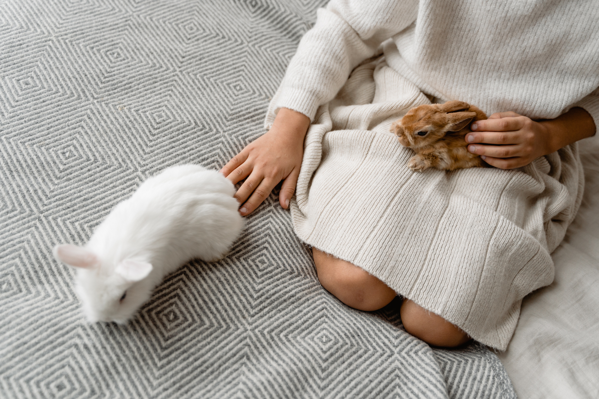
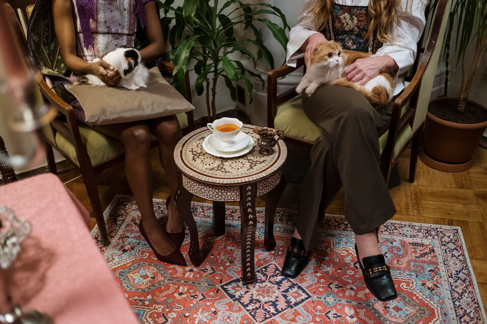
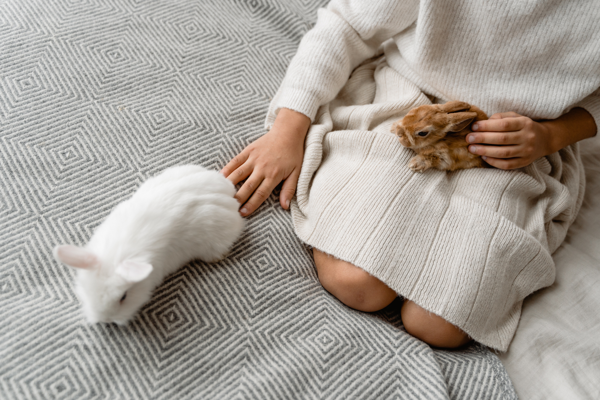
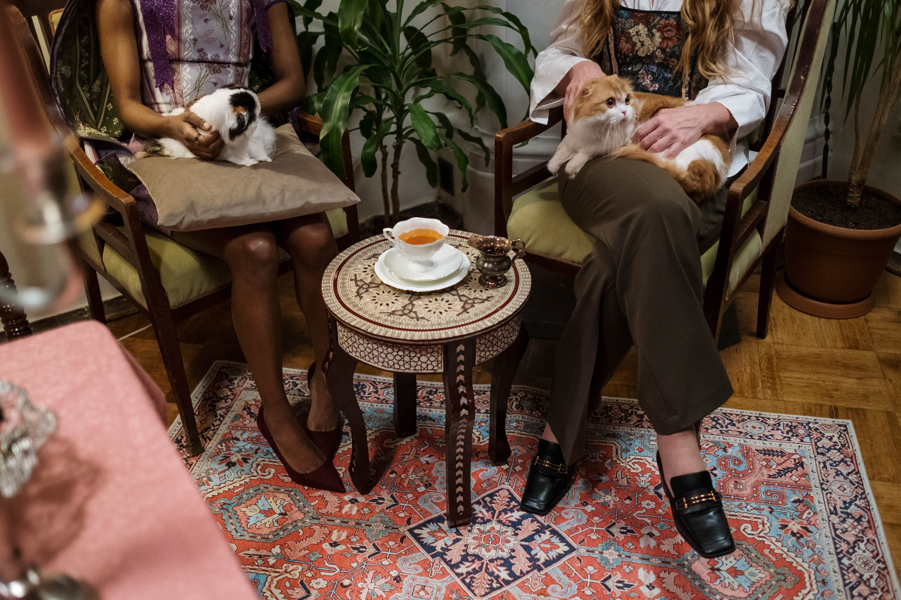
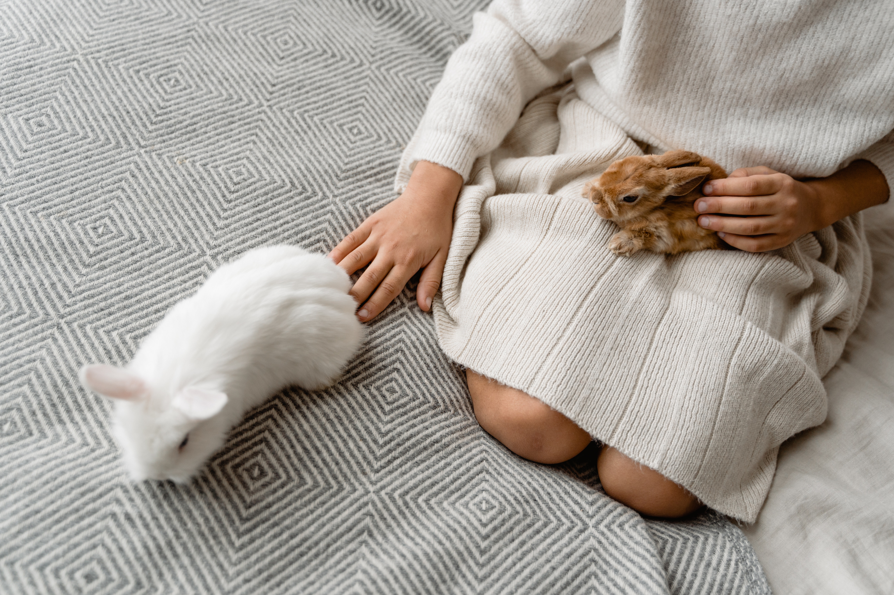

Adopted and Loved: Our success stories


 



At The Animal Sanctuary, we're dedicated to providing a safe and loving home for animals in need. Our shelter is staffed by a team of compassionate volunteers who work tirelessly to care for the animals in our care. We believe that every animal deserves a chance to thrive, which is why we provide veterinary care, nutritious food, and plenty of exercise and socialization opportunities. Whether you're looking to adopt a new furry friend, volunteer your time, or donate to our cause, we welcome you to join us in our mission to create a better world for animals.


Volunteering at The Animal Sanctuary is a great way to make a difference in the lives of animals in need while also gaining valuable experience and making new friends. We offer a variety of volunteer opportunities, including dog-walking, cat socialization, administrative work, and event planning. No matter what your skills or interests may be, we have a role for you to play. All volunteers receive training and support from our staff, and we ask that you commit to a regular schedule of at least 4 hours per week. If you're interested in volunteering, please click the button below to contact our volunteer coordinator.
Contact Us
Your donation can make a big difference in the lives of the animals at The Animal Sanctuary. With your support, we can provide veterinary care, nutritious food, and comfortable shelter for animals in need. We appreciate donations of any size, and every dollar counts. To make a donation, please click the button below.
Donate Now